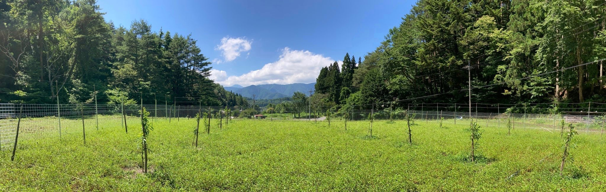
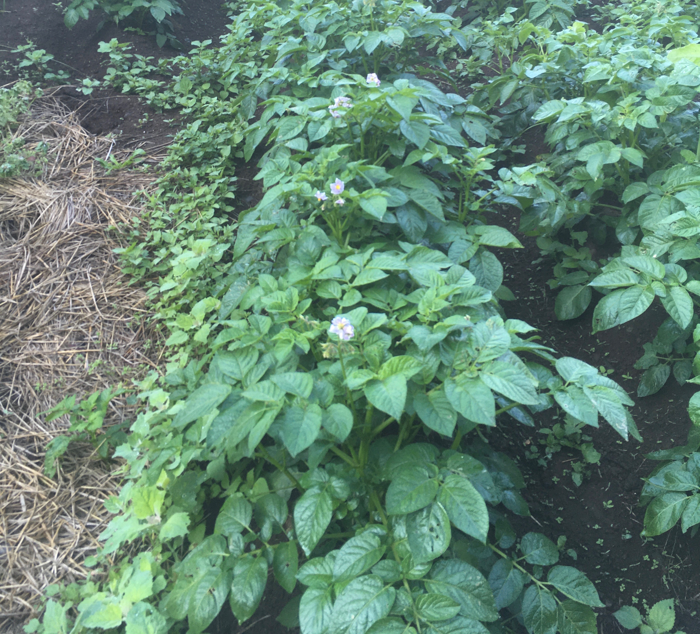
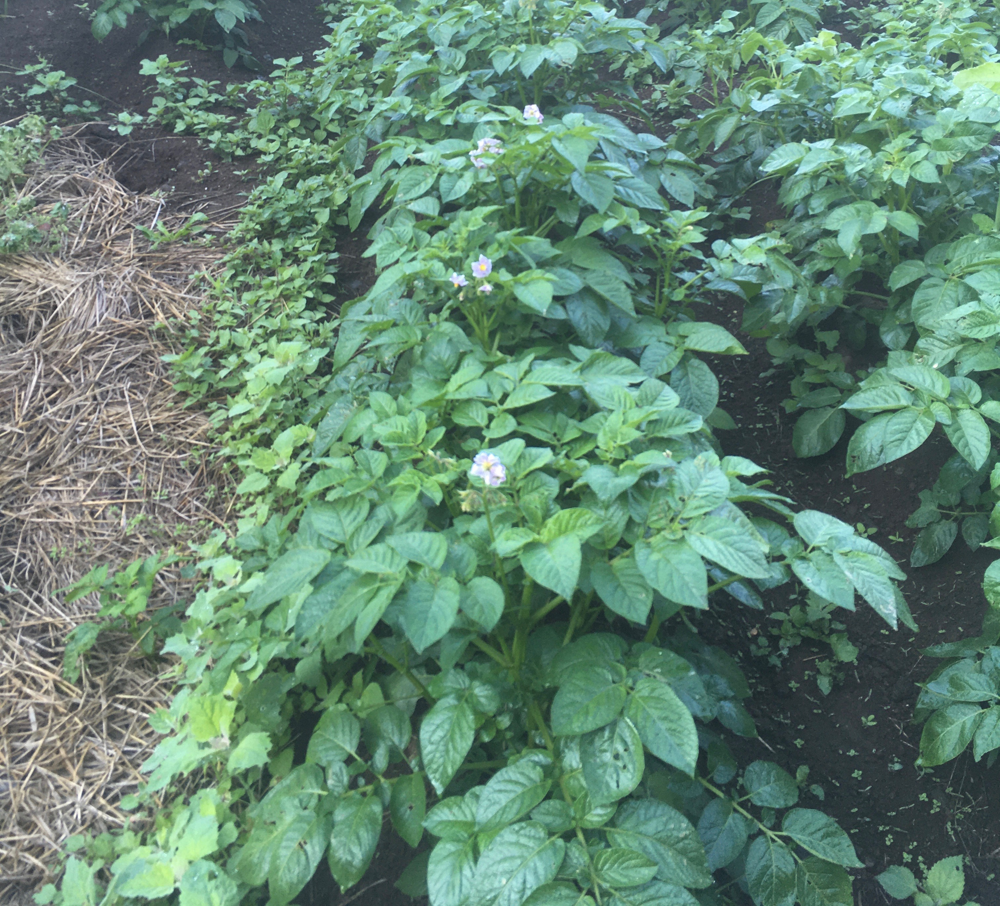

栗畑20200801
山を動かす日記 -Diary to move the mountain-
私はパン職人と農家をしています。農家は祖父から継ぎ、家族や親戚の人や地域の大先輩から教わり、手伝ってもらいながら始めました。
なんだか大変な仕事を二つ掛け合わせたような状態で、朝から晩まで動き回って試行錯誤しています。
お店のパン焼きと山間の田畑の往復をしています。パンの発酵の様子を伺いつつ、暖かい季節は陽や雨に当たり、育ってている作物や野原の草花の成長と歯を食う虫に追われる日々が続き、
冬はその年の反省や来年の仕込み、麦の栽培があります。
今まで、見て体で学んできたことを総動員して大変な日々を動かしたい！楽しみたい！そのための工夫の日記です。
自分一人では、すぐには、なかなか手に負えない山を動かしたいです!!
大々的な題名になりましたが、力不足なので、暖かく見てください。
※年は1月で区切らず、小麦の種まき（表記年11月）〜稲の収穫（翌年10月）まで、11月区切りです。
※書き手 宮下成平 1994年生まれ 高校生と大学生時代に建築を通して様々な生活を学んだ。パン職人と祖父の田畑を耕す。
農-Agriculture-NO.1 2020/09/13/Sat(曇) 1年目で栗に実が！！

栗の木は祖父が植えて欲しいと言っていたので植えた。栗の実も保存が効き、樹木自体もタフで、手入れも少ないので植えた。建築資材としても水に強く、基礎に使用される。
生活に重要な役割を持っている木だ！品種はポロタンとポロスケ、各10本を植えた。この品種は皮が剥きやすく渋皮も取れやすい新しい品種である。栗は別品種を混ぜないと実をならさない。苗木の購入は2019年11月で、現場が山奥のため、麓の畑に仮植えをし、冬の間に現場の観察（主に日当たり、霜の降り具合）、マサ（田圃の水を
遮る層）の破壊を行い、春に移植を行った。移植後は梅雨入りまで根を定着させるために三日に一回ほど水やりを行った。その中で栗は沢山の虫を呼び寄せるようで、蜂、ハエ、蝶、蛾、カナブン、ナナフシなど沢山の虫が
集まってきた。夕立時にびしょ濡れになりながら見に行くと、虫が雨宿りをしていたり、芋虫にも草食と肉食がいて芋虫を別の芋虫が食べていた。僕は木の周りでは小さな生態系があるようにも見えた。
これは木が生き物の中心にあるように見えた。そして葉っぱを沢山食べられたので、なんども虫を潰しに行った。何度も店と往復するのは大変だったので、防虫剤（エルサン乳剤）を散布（栗への使用が許可されているもの）
。が、虫がいなくなって、なんか寂しくなった、、、虫がいない木は不自然な気もした（笑）。移植１年目で実はならないはずだったが、全体で20個ほど実がなった！！栽培のアドバイスをしてくれる県の技師方も
驚いていた！見にいく度に驚かされるのが楽しみである。今年の収穫が楽しみである。
パン-Pain-NO.1 2020/09/13/sat(曇) じゃがいもパン試作 しっかり芋の味がする！
 

試作のレシピは日本に製パン技術を伝えたレイモン・カルヴェル教授のレシピを参考にした。レシピの載っている本は僕より年上だった。じゃがいもはマッシュにして、
生地と練り合わせる。潰すので芋感はでないと思ったが、小さい粒で残った。味もじゃがいもの味がしっかりしていた（ポテチ的な風味と味）。驚いたのは、油脂や砂糖を入れずともパンが硬くならないことである。
お客様側からも扱いやすいパンになるのではないかと思う。
回遊-Migration-NO.1 2020/09/13/sat(曇) 読書「没入」で捏ねると耕すがつながったかも
本 「グラウンド・ツアー 泥モノ」著者：藤森照信 発行：編集出版組織体アセテート アセテートさんの本は難しいんだけど、何か読まなくてはいけないような気がいつもする。
本書の「没入」の内容的には、泥の建築を作る時に泥を塗って行くのだが、次第に作り手が無口になるらしい。作り手の意識は手を伝って泥の壁に入って行くのだ。このことを没入すると言っていた。パンも捏ねていると
意識は手を伝って生地に行く。畑でも鍬（クワ）やトラクターを伝って意識が土に伝わって行く。